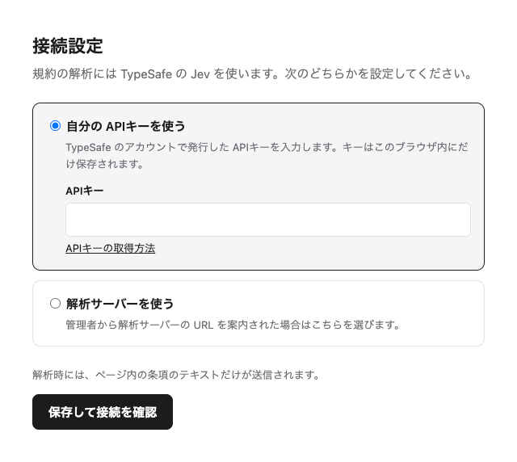
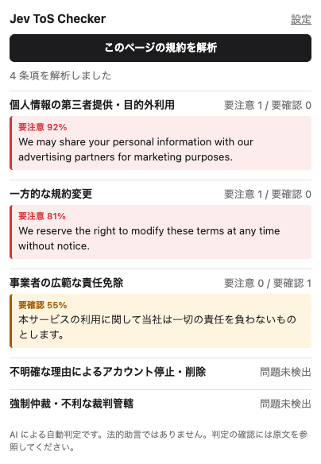

できること
利用規約は長く、大事な条項ほど見落としがちです。この拡張機能は規約のページを条項ごとに分け、5種類のリスクについて1つずつ判定します。該当した条項は原文と一緒に表示するので、最終的な判断はご自身で行えます。
- 個人情報データの第三者提供や目的外利用
- 規約変更事前の通知なく規約を変更できる条項
- 責任制限事業者の責任を広く免除・制限する条項
- アカウント明確な理由なくアカウントを停止・削除できる条項
- 紛争解決強制仲裁、集団訴訟の放棄、利用者に不利な裁判管轄
- 要注意は、そのリスクを含む可能性が高い条項です。
- 要確認は、含む可能性がある条項です。原文を読んで判断してください。
どのサイトでも、どの言語の規約でも使えます。拡張機能の画面は、ブラウザの言語に合わせて日本語か英語で表示されます。
インストール
まだ Chrome ウェブストアには公開していないため、ダウンロードしたフォルダから読み込みます。2分ほどで終わります。
- jev-tos-checker.zip をダウンロードします。
- zip を展開すると
jev-tos-checkerフォルダができます。書類フォルダなど、残しておく場所に移してください。あとでフォルダを削除・移動すると拡張機能が動かなくなります。 - Chrome のアドレスバーに
chrome://extensionsと入力して Enter を押します。 - 右上の デベロッパー モード をオンにします。
- パッケージ化されていない拡張機能を読み込む を押し、
jev-tos-checkerフォルダを選びます。 - ツールバーのパズルのアイコンから Jev ToS Checker をピン留めしておくと、すぐに使えます。
ダウンロードしたファイルの確認(任意)
リリースのファイルはこのリポジトリの GitHub Actions で作られ、GitHub がビルドごとに署名付きの記録を残しています。GitHub CLI を使っている場合は、gh attestation verify jev-tos-checker.zip --repo shohei81/jev-tos-checker を実行すると、zip がこのリポジトリで作られ、改ざんされていないことを確認できます。v0.3.0 より後に公開したリリースが対象です。
接続の設定
インストールすると設定画面が自動で開きます。どちらかを選んで 保存して接続を確認 を押してください。保存する前に、接続できるかを確認します。

使い方
- 利用規約やプライバシーポリシーのページを開きます。
- 拡張機能のアイコンを押し、このページの規約を解析 を押します。
- 結果はカテゴリごとにまとめて表示されます。条項を押すと、ページ内のその箇所に移動します。

新しいバージョンへの更新
- 最新の jev-tos-checker.zip をダウンロードして展開します。
- 今ある
jev-tos-checkerフォルダを、新しいフォルダで置き換えます。 chrome://extensionsを開き、Jev ToS Checker の再読み込みアイコンを押します。
設定はそのまま引き継がれます。各バージョンの変更点は Releases ページで確認できます。
プライバシーと注意点
ページを読み取るのはボタンを押したときだけです。送信するのは条項のテキストだけで、送信先は TypeSafe か、設定した解析サーバーです。裏で勝手に送信することはありません。
結果は AI による自動判定で、法的助言ではありません。見落としや、問題のない条項に印を付けることもあるので、必ず原文を確認してください。条項が段落や箇条書きで分かれているページで最もよく動きます。